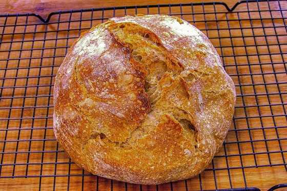

滋賀県草津市・草津宿本陣の近くのパン屋
tsuzuki
続いていく日々に、
そっと寄り添うパンを。
お店の想い
ABOUT店名の「tsuzuki」は、店主・窪田征次さんの名前の漢字「次」から付けられたそうです。「続いていく日々や人生に寄り添えるパン屋でありたい」という思いが込められています。
窪田さんは製パン学校を卒業後、神戸、鹿児島、大津市内のベーカリーなどで約12年修業し、いつか自分の店を持つ目標をかなえて独立しました。
出典: びわ湖大津経済新聞(2026年)

上記は報道で確認できた内容です。キャッチコピー等の言い回しは制作側の表現です。
口コミ
VOICEイメージ例
朝に寄ると、まだあたたかいパンに出会えるのがうれしいです。小麦の香りがしっかりしていました。
ご近所にお住まいの方(想定)
イメージ例
クリームパンの香ばしい表面が印象的でした。散歩のついでに、つい立ち寄ってしまいます。
宿場町を歩いていた方(想定)
イメージ例
毎日食べても飽きないやさしい味。食パンは翌朝のトーストまで楽しみです。
日々の食卓に選ぶ方(想定)
口コミはイメージ例(創作)であり、実在のお客様の声ではありません。
アクセス
ACCESS| 住所 | 滋賀県草津市草津2丁目13-11 (草津宿本陣の近く) |
|---|---|
| 電話 | 準備中 |
| 営業時間 | 10:00〜17:00(売り切れ次第終了)と報じられています。最新情報はInstagramでご確認ください。 |
| 定休日 | 日曜・月曜と報じられています(2026年春の報道時点)。 |
| 価格 | 準備中 |
| @tsuzuki_bakeryshop |